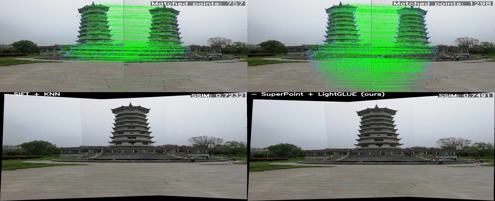
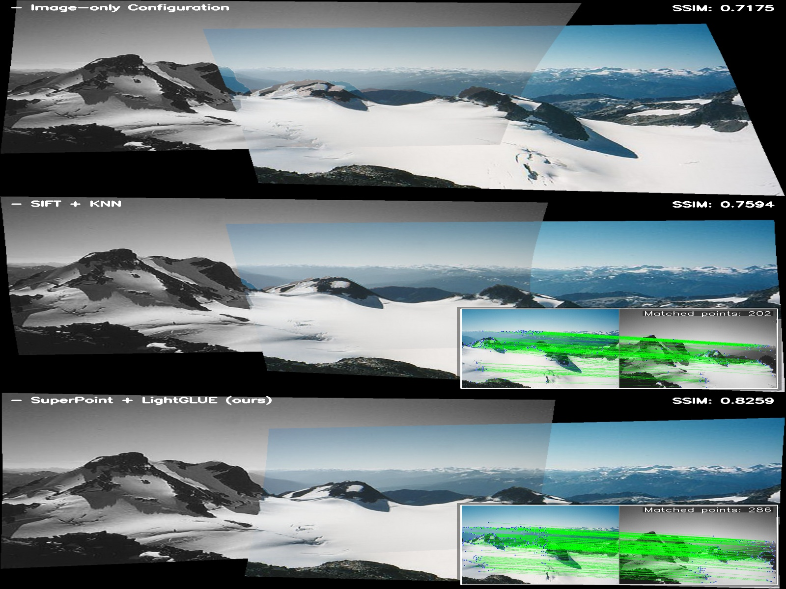
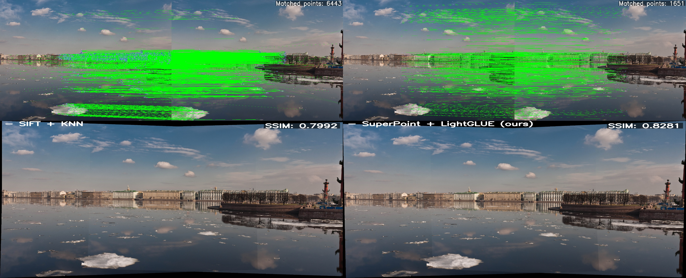
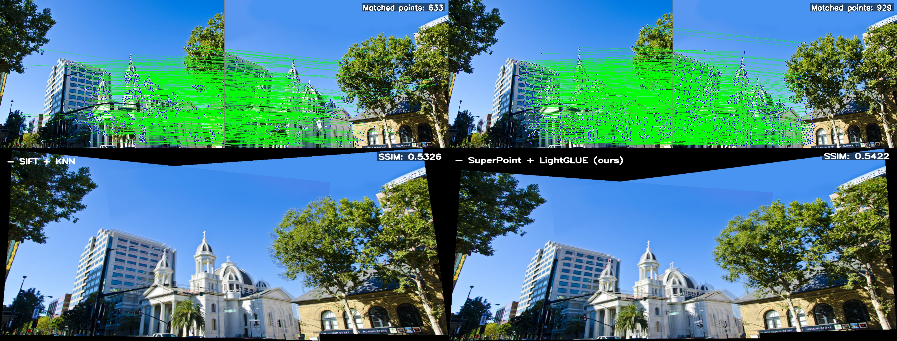
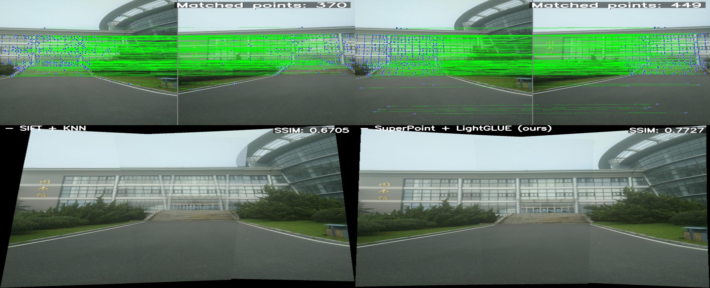
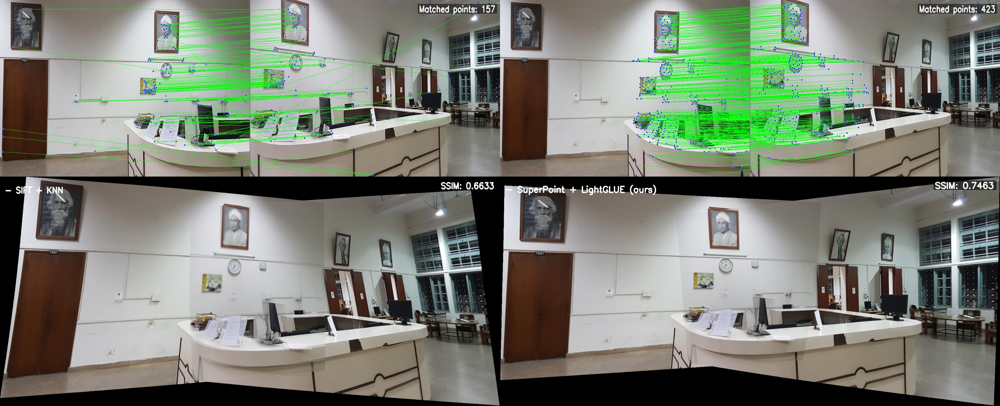

Abstract
Traditional image stitching methods estimate warps from hand-crafted geometric features, whereas recent learning-based solutions leverage semantic features from neural networks instead. These two lines of research have largely diverged along separate evolution, with virtually no meaningful convergence to date. In this paper, we take a pioneering step to bridge this gap by unifying semantic and geometric features with UniStitch, a unified image stitching framework from multimodal features. To align discrete geometric features (i.e., keypoint) with continuous semantic feature maps, we present a Neural Point Transformer (NPT) module, which transforms unordered, sparse 1D geometric keypoints into ordered, dense 2D semantic maps. Then, to integrate the advantages of both representations, an Adaptive Mixture of Experts (AMoE) module is designed to fuse geometric and semantic representations. It dynamically shifts focus toward more reliable features during the fusion process, allowing the model to handle complex scenes, especially when either modality might be compromised. The fused representation can be adopted into common deep stitching pipelines, delivering significant performance gains over any single feature. Experiments show that UniStitch outperforms existing state-of-the-art methods with a large margin, paving the way for a unified paradigm between traditional and learning-based image stitching.
Using Different Keypoint Detection Methods






BibTeX
@article{mei2026unistitch,
title={UniStitch: Unifying Semantic and Geometric Features for Image Stitching},
author={Mei, Yuan and Nie, Lang and Liao, Kang and Xu, Yunqiu and Lin, Chunyu and Xiao, Bin},
journal={arXiv preprint arXiv:2603.10568},
year={2026}
}